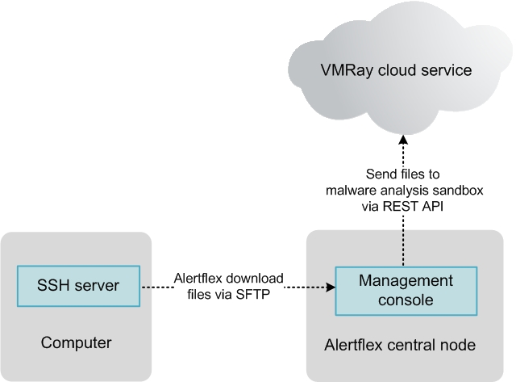
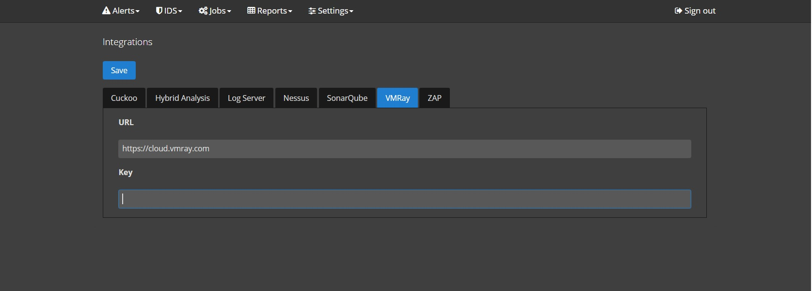
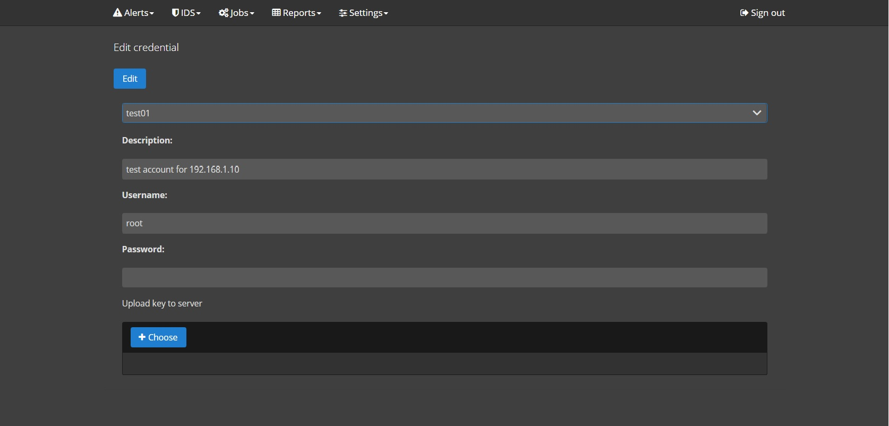
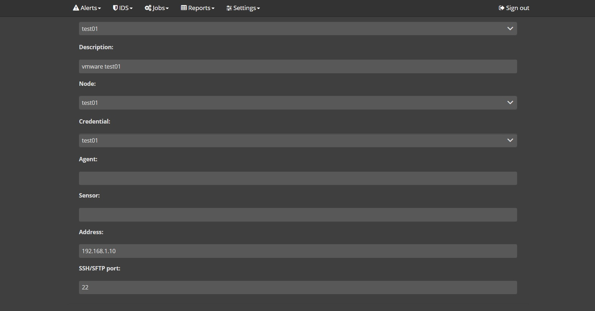
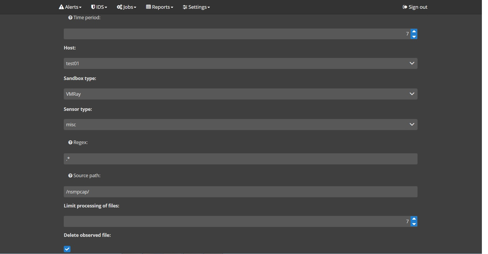
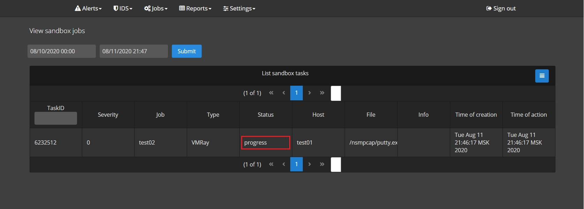
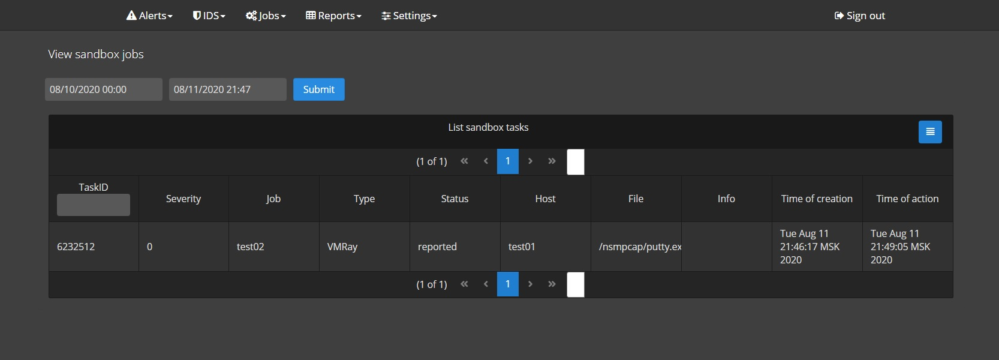
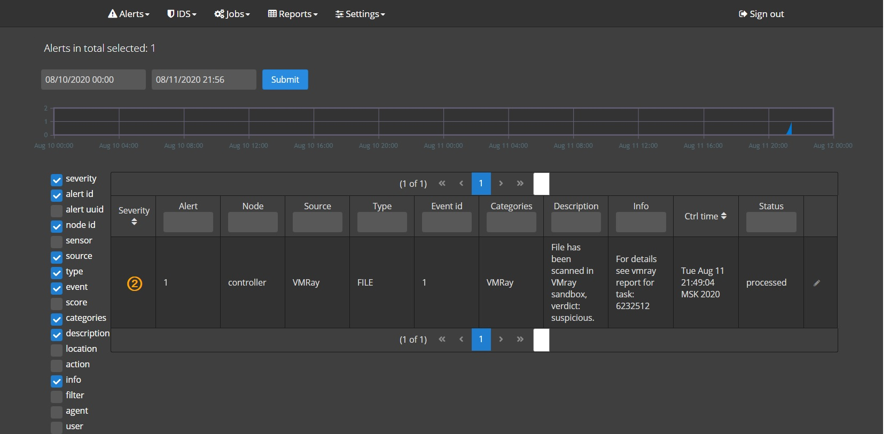
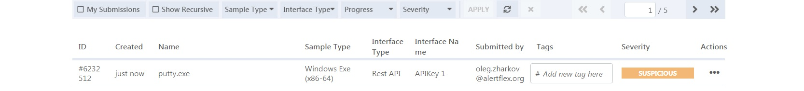
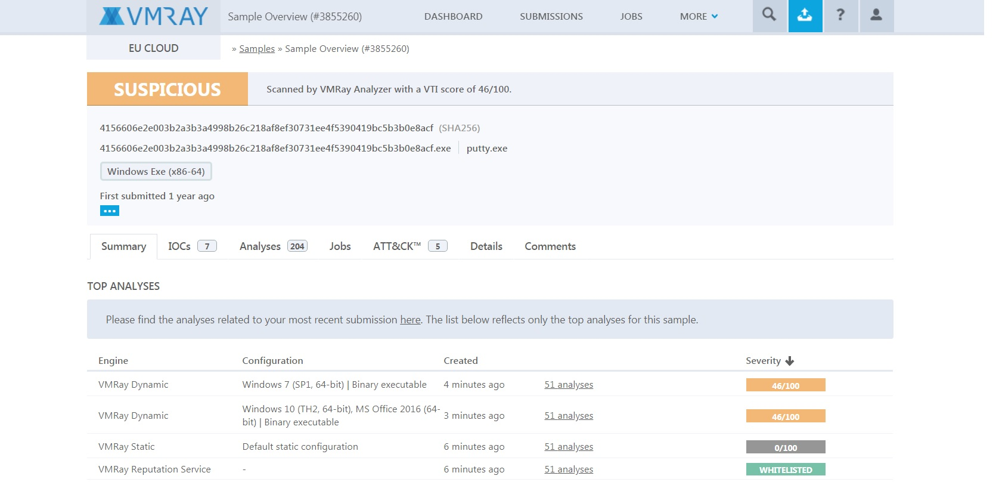

The Alertflex open-source project provides time-based automation of file delivery to malware analysis sandbox and continuously monitoring the result of the analysis.
Describer the process of configuration Alertflex and to be sure that Alertflex downloads files from the remote host via SFTP protocol, send it to VMRay cloud service for analysis via REST, creates an internal sandbox task, and periodically checks the status of an analyzed file in the cloud sandbox. If the file is determined as suspicious or malicious, alert with severity 2 (major) or 3 (critical) in Alertflex web console should be raised.
Note: Alertflex solution is provided under Apache-2.0 License and AGPL-3.0 License, please read these licenses before starting to work with Alertflex.
You need two computers/VM file server and Alertflex management console, an active VMRay cloud account, two sample EXE files normal and suspicious. Below present a network diagram of use case:
1) Open panel /settings/integrations of Alertflex management console and configure VMRay cloud account.
2) Open panel /settings/credentials/add of Alerflex management console and configure credential account for SSH access to file server host.
3) Open panel /settings/host/add of Alertflex management console and configure host account for SSH access to file server host.
4) Open panel /jobs/sandbox/add of Alertflex management console and configure sandbox job for file server host
Note: parameter Time period is given in seconds for periodically check of folder /nsmpcap/ with observed files
1) Copy a test file to folder /nsmpcap/.
root@host:/nsmpcap# pwd
/nsmpcap
root@host:/nsmpcap# cp /var/www/putty.exe ./
root@host:/nsmpcap# ls
putty.exe
root@host:/nsmpcap#
2) After expiration of Time period defined in sandbox job, please check the folder /nsmpcap/ to be sure that the above file was sent to the sandbox and deleted in this folder by Alertflex management console.
3) Open panel /jobs/reports/sandbox of Alertflex management console and check status of sandbox task.
Note: If parameter status is equals to progress VMRay service still analysis the file, wait until status will be reported.
4) If the status of the task is reported please check the alert dashboard of Alertflex console, there is an alert about file analysis must be present.
5) Open panel of VMRay Web UI and check sandbox report.
 